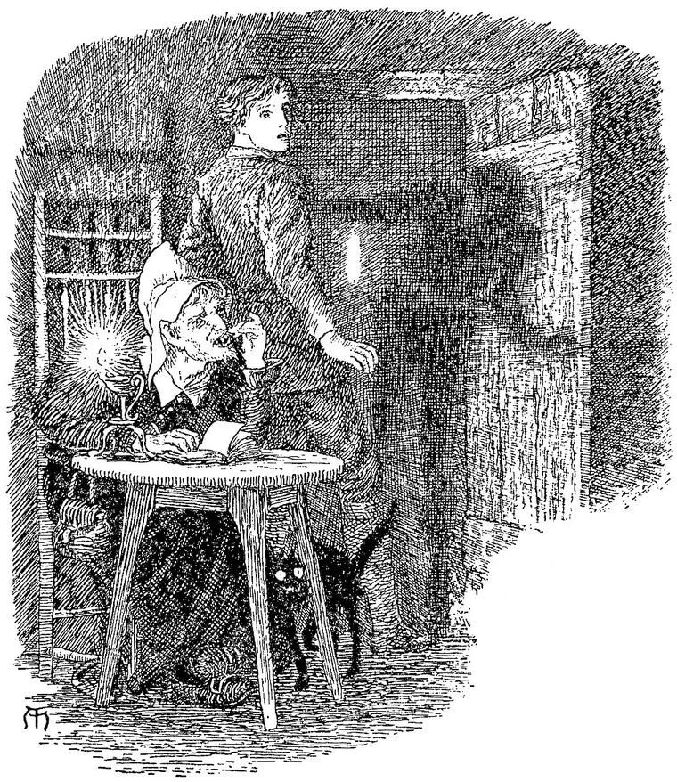

“I am a part of the part, which at first was the whole.”
GOETHE.—Mephistopheles in Faust.
My spirits rose as I went deeper; into the forest; but I could not regain my former elasticity of mind. I found cheerfulness to be like life itself—not to be created by any argument. Afterwards I learned, that the best way to manage some kinds of pain filled thoughts, is to dare them to do their worst; to let them lie and gnaw at your heart till they are tired; and you find you still have a residue of life they cannot kill. So, better and worse, I went on, till I came to a little clearing in the forest. In the middle of this clearing stood a long, low hut, built with one end against a single tall cypress, which rose like a spire to the building. A vague misgiving crossed my mind when I saw it; but I must needs go closer, and look through a little half-open door, near the opposite end from the cypress. Window I saw none. On peeping in, and looking towards the further end, I saw a lamp burning, with a dim, reddish flame, and the head of a woman, bent downwards, as if reading by its light. I could see nothing more for a few moments. At length, as my eyes got used to the dimness of the place, I saw that the part of the rude building near me was used for household purposes; for several rough utensils lay here and there, and a bed stood in the corner.
An irresistible attraction caused me to enter. The woman never raised her face, the upper part of which alone I could see distinctly; but, as soon as I stepped within the threshold, she began to read aloud, in a low and not altogether unpleasing voice, from an ancient little volume which she held open with one hand on the table upon which stood the lamp. What she read was something like this:
“So, then, as darkness had no beginning, neither will it ever have an end. So, then, is it eternal. The negation of aught else, is its affirmation. Where the light cannot come, there abideth the darkness. The light doth but hollow a mine out of the infinite extension of the darkness. And ever upon the steps of the light treadeth the darkness; yea, springeth in fountains and wells amidst it, from the secret channels of its mighty sea. Truly, man is but a passing flame, moving unquietly amid the surrounding rest of night; without which he yet could not be, and whereof he is in part compounded.”
As I drew nearer, and she read on, she moved a little to turn a leaf of the dark old volume, and I saw that her face was sallow and slightly forbidding. Her forehead was high, and her black eyes repressedly quiet. But she took no notice of me. This end of the cottage, if cottage it could be called, was destitute of furniture, except the table with the lamp, and the chair on which the woman sat. In one corner was a door, apparently of a cupboard in the wall, but which might lead to a room beyond. Still the irresistible desire which had made me enter the building urged me: I must open that door, and see what was beyond it. I approached, and laid my hand on the rude latch. Then the woman spoke, but without lifting her head or looking at me: “You had better not open that door.” This was uttered quite quietly; and she went on with her reading, partly in silence, partly aloud; but both modes seemed equally intended for herself alone. The prohibition, however, only increased my desire to see; and as she took no further notice, I gently opened the door to its full width, and looked in. At first, I saw nothing worthy of attention. It seemed a common closet, with shelves on each hand, on which stood various little necessaries for the humble uses of a cottage. In one corner stood one or two brooms, in another a hatchet and other common tools; showing that it was in use every hour of the day for household purposes. But, as I looked, I saw that there were no shelves at the back, and that an empty space went in further; its termination appearing to be a faintly glimmering wall or curtain, somewhat less, however, than the width and height of the doorway where I stood. But, as I continued looking, for a few seconds, towards this faintly luminous limit, my eyes came into true relation with their object. All at once, with such a shiver as when one is suddenly conscious of the presence of another in a room where he has, for hours, considered himself alone, I saw that the seemingly luminous extremity was a sky, as of night, beheld through the long perspective of a narrow, dark passage, through what, or built of what, I could not tell. As I gazed, I clearly discerned two or three stars glimmering faintly in the distant blue. But, suddenly, and as if it had been running fast from a far distance for this very point, and had turned the corner without abating its swiftness, a dark figure sped into and along the passage from the blue opening at the remote end. I started back and shuddered, but kept looking, for I could not help it. On and on it came, with a speedy approach but delayed arrival; till, at last, through the many gradations of approach, it seemed to come within the sphere of myself, rushed up to me, and passed me into the cottage. All I could tell of its appearance was, that it seemed to be a dark human figure. Its motion was entirely noiseless, and might be called a gliding, were it not that it appeared that of a runner, but with ghostly feet. I had moved back yet a little to let him pass me, and looked round after him instantly. I could not see him.

“Where is he?” I said, in some alarm, to the woman, who still sat reading.
“There, on the floor, behind you,” she said, pointing with her arm half-outstretched, but not lifting her eyes. I turned and looked, but saw nothing. Then with a feeling that there was yet something behind me, I looked round over my shoulder; and there, on the ground, lay a black shadow, the size of a man. It was so dark, that I could see it in the dim light of the lamp, which shone full upon it, apparently without thinning at all the intensity of its hue.
“I told you,” said the woman, “you had better not look into that closet.”
“What is it?” I said, with a growing sense of horror.
“It is only your shadow that has found you,” she replied. “Everybody’s shadow is ranging up and down looking for him. I believe you call it by a different name in your world: yours has found you, as every person’s is almost certain to do who looks into that closet, especially after meeting one in the forest, whom I dare say you have met.”
Here, for the first time, she lifted her head, and looked full at me: her mouth was full of long, white, shining teeth; and I knew that I was in the house of the ogre. I could not speak, but turned and left the house, with the shadow at my heels. “A nice sort of valet to have,” I said to myself bitterly, as I stepped into the sunshine, and, looking over my shoulder, saw that it lay yet blacker in the full blaze of the sunlight. Indeed, only when I stood between it and the sun, was the blackness at all diminished. I was so bewildered—stunned—both by the event itself and its suddenness, that I could not at all realise to myself what it would be to have such a constant and strange attendance; but with a dim conviction that my present dislike would soon grow to loathing, I took my dreary way through the wood.